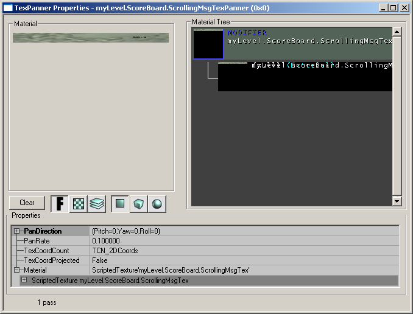
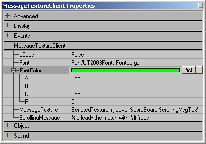

This tutorial explains how to make a scrolling scoreboard for UT2004.
ScriptedTexture
First you need to set up a scripted texture that will display the message.
- In the texture browser click File → New
- Enter the following - Package: myLevel, Group: Scoreboard, Name: scrollingMsgTex, MaterialClass: ScriptedTexture
- Press New and the ScriptedTexture properties window should appear
- Set UClamp and VClamp as the size you want the texture (must be a power of 2), e.g. 1024 and 64
- Close the Properties window
|
|
TexPanner
To make the message scroll, you need a TexPanner
- In the texture browser click File → New
- Enter the following - Package: myLevel, Group: Scoreboard, Name: scrollingMsgTexPanner, MaterialClass: TexPanner
- Press New
(The TexPanner Properties should open now. If not, open the window manually before proceeding to the next step.)
- Select the scipted texture you made from the texture browser
- In TexPanner Properties, select Material and press Use
- You can change the scrolling speed by setting the PanRate. It's 0.1 by default
Apply this texture to a surface in the map, and check its unlit property.
|

|
MessageTextureClient
The MessageTextureClient actor lets you set the display text and other properties of the scrolling scoreboard.
Add an Actor >> Info >> MessageTextureClient somewhere near the scoreboard and set the following properties in the MessageTextureClient group:
- bCaps
- Sets whether or not the entire message is displayed in capitals (True or False)
- Font
The display font. It is not possible to select a font by pressing "..." or "use". Open the package UT2003Fonts.utx in the texture browser and you can see all the fonts. Type a font name into the font property - it must be formatted like this: Font'UT2003Fonts.*FontName*' for example Font'UT2003Fonts.FontLarge'.
It's a good idea to pick a large font for a scoreboard. Here is a list of all the fonts available:
| Font'UT2003Fonts.DefaultFont' |
Font'UT2003Fonts.FontNeuzeit9' |
| Font'UT2003Fonts.FontEurostile8' |
Font'UT2003Fonts.FontNeuzeit11' |
| Font'UT2003Fonts.FontEurostile9' |
Font'UT2003Fonts.FontNeuzeit12' |
| Font'UT2003Fonts.FontEurostile11' |
Font'UT2003Fonts.FontNeuzeit14' |
| Font'UT2003Fonts.FontEurostile12' |
Font'UT2003Fonts.FontNeuzeit17' |
| Font'UT2003Fonts.FontEurostile14' |
Font'UT2003Fonts.FontNeuzeit21' |
| Font'UT2003Fonts.FontEurostile17' |
Font'UT2003Fonts.FontNeuzeit24' |
| Font'UT2003Fonts.FontEurostile21' |
Font'UT2003Fonts.FontNeuzeit29' |
| Font'UT2003Fonts.FontEurostile24' |
Font'UT2003Fonts.FontNeuzeit37' |
| Font'UT2003Fonts.FontEurostile29' |
Font'UT2003Fonts.FontSmall' |
| Font'UT2003Fonts.FontEurostile37' |
Font'UT2003Fonts.FontSmallText' |
| Font'UT2003Fonts.FontLarge' |
Font'UT2003Fonts.FontSmallText800x600' |
| Font'UT2003Fonts.FontLarge1024x768' |
Font'UT2003Fonts.jFontLarge' |
| Font'UT2003Fonts.FontLarge800x600' |
Font'UT2003Fonts.jFontLarge1024x768' |
| Font'UT2003Fonts.FontMedium' |
Font'UT2003Fonts.jFontMedium1024x768' |
| Font'UT2003Fonts.FontMedium1024x768' |
Font'UT2003Fonts.jFontMedium800x600' |
| Font'UT2003Fonts.FontMedium800x600' |
Font'UT2003Fonts.jFontMono' |
| Font'UT2003Fonts.FontMono' |
Font'UT2003Fonts.jFontMono800x600' |
| Font'UT2003Fonts.FontMono800x600' |
Font'UT2003Fonts.jFontSmall' |
| Font'UT2003Fonts.FontNeuzeit8' |
Font'UT2003Fonts.jFontSmallText' |
| Font'UT2003Fonts.jFontLarge800x600' |
Font'UT2003Fonts.jFontSmallText800x600' |
| Font'UT2003Fonts.jFontMedium' |
- FontColor
- Sets the colour of the text displayed on the screen. Make sure you change it from black and increase the alpha (A), otherwise the text won't show up on the black background.
- MessageTexture
- Select the ScriptedTexture you made earlier from the texture browser and click Use.
- ScrollingMessage
- The text displayed on the screen. Type anything you like here. Add %lp to display the leading player's name, and %lf to display their frags - for example %lp leads the match with %lf frags.
|

|
Testing
Play the game and watch your name scroll across the screen! If the message doesn't show up, check that you've set the FontColor alpha value high enough and have added the SciptedTexture to the MessageTextureClient properties. Also check you've applied the TexPanner to a surface and not the ScriptedTexture.
Discussion
Ragdoll This is a clear, well thought out tutorial. However, when I follow it and try my scoreboard in game it just pans the words "in control" across endlessly. In the message texture client Ive put "%Ip is in control with %If kills". Any idea what could be causing this?
EricBlade: I could be wrong, as it appears that this is not supported in my engine (i do have the UC code, but i just get a blob of grey when I try it), but it sounds like one of the Clamp settings might be too low?
Wormbo: Maybe your font is too large or your ScriptedTexture is too small.
Hazel.H: Try a bigger size for UClamp, something like 1024 or bigger depending on the font size.
Ragdoll: Thanks for the help. Turns out the texture was to small for the message.
Anon hi i've tried this tut twice and when i get to this point under tex panner :
"Select the scipted texture you made from the texture browser.
In TexPanner Properties, select Material and press Use. "
Ued crashes. i've tried two times so far and it crashes at that point. Am i doing something wrong?
Wormbo: Make sure the ScriptedTexture is selected in the texture browser when you click the Use button, otherwise you will assign the TexPanner to itself, which results in the UEd Goblin getting angry. And you don't want the Goblin to be angry. 
Category Tutorial
![[scoreboard_preview]](images/scoreboard-preview.jpeg)
![[scoreboard_scripted]](images/scoreboard-scripted.png)